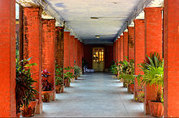
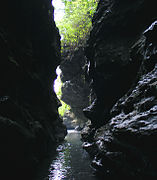
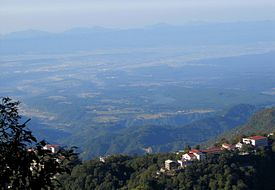

DEHRADUN VISITING PLACES
Dehradun is the capital of the Indian state of Uttarakhand, near the Himalayan foothills. At its core is the 6-sided Ghanta Ghar clock tower. To the southwest is Paltan Bazaar, a busy shopping area. Just east is the Sikh temple Gurdwara Nanaksar, topped with ornate white and golden domes. In Clement Town to the city’s southwest, Mindrolling Monastery is a Tibetan Buddhist center with shrine rooms in its Great Stupa.ratio of girls is 873 per 1000 boys.There are a number of small towns and tourist sites in Dehradun District.
Elevation: 437 m
Area: 300 km²
Weather: 28°C, Wind NW at 5 km/h, 69% Humidity
Population: 5.78 lakhs (2011)
*******POPULAR VISITING PLACES*****
- Khalanga Memorial
- Forest Research Institute
- Maa Bala Sundari Mandir
***************Places of interest**********
1>Khalanga Memorial
The Battle of Nalapani was the first battle of the Anglo-Nepalese War of 1814–1816, fought between the forces of the British East India Company and Nepal, then ruled by the House of Gorkha. The battle took place around the Nalapani fort, near Dehradun, which was placed under siege by the British between 31 October.

2>Maa Bala Sundari Mandir
There are various temples of Maa Bala Sundari Devi situated in India and this is one such temple. The main temple is in Trilokpur, Himachal Pradesh. This Mata Temple is situated approximately 3 km South-West Direction of Sudhowala. This great temple is situated inside a forest. Gaur Brahmin of sudhowala are panjit(brahman) of this temple.

3>Dehradun International Cricket Stadium
Dehradun cricket stadium
Rajiv Gandhi International Cricket Stadium, Dehradun is a multi-purpose stadium in the Raipur area of Dehradun, Uttarakhand.[29] It is the first international level stadium in the state.

4>Robbers Cave
Robber's Cave (locally known as Guchhupani), is a river cave formation in Himalaya, located approximately 8 km from the centre of Dehradun City in Uttarakhand state of India. Believed to be the hideout of the famous Sultana Daku and his band of dacoits. The cave formation has thus been named Robber's Cave.

The cave is about 300 metres long, divided into two main parts. The cave has a highest fall of about 10 metres. In the central part there is a fort wall structure which is now broken.[30] It consists of an extremely narrow gorge formed in a conglomerate limestone area on Doon Valley's Dehra plateau.
It is a natural cave formation where rivers flows inside the cave. The place is a tourist site and is maintained by Uttarakhand State. Local bus services are available up to Anarwala village, from where it is a kilometre's trek away.

5>Lacchiwala Picnic Spot
It is a popular tourist destination specially during summers. It is well known for its forest scenic beauty and man-made water pools.

Visit our second page